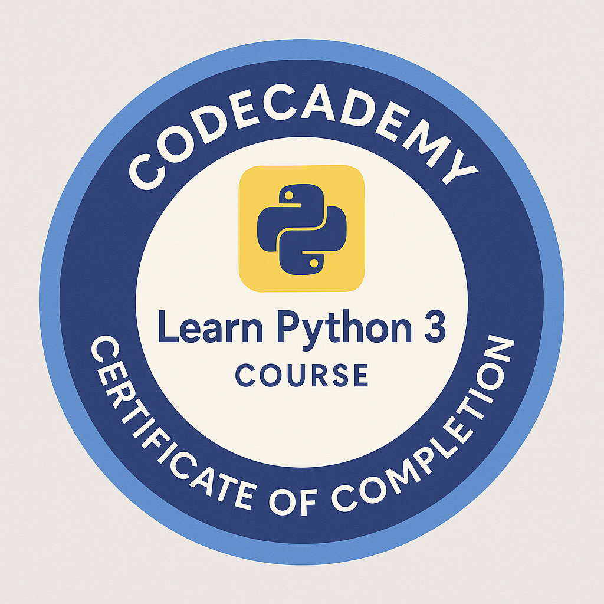
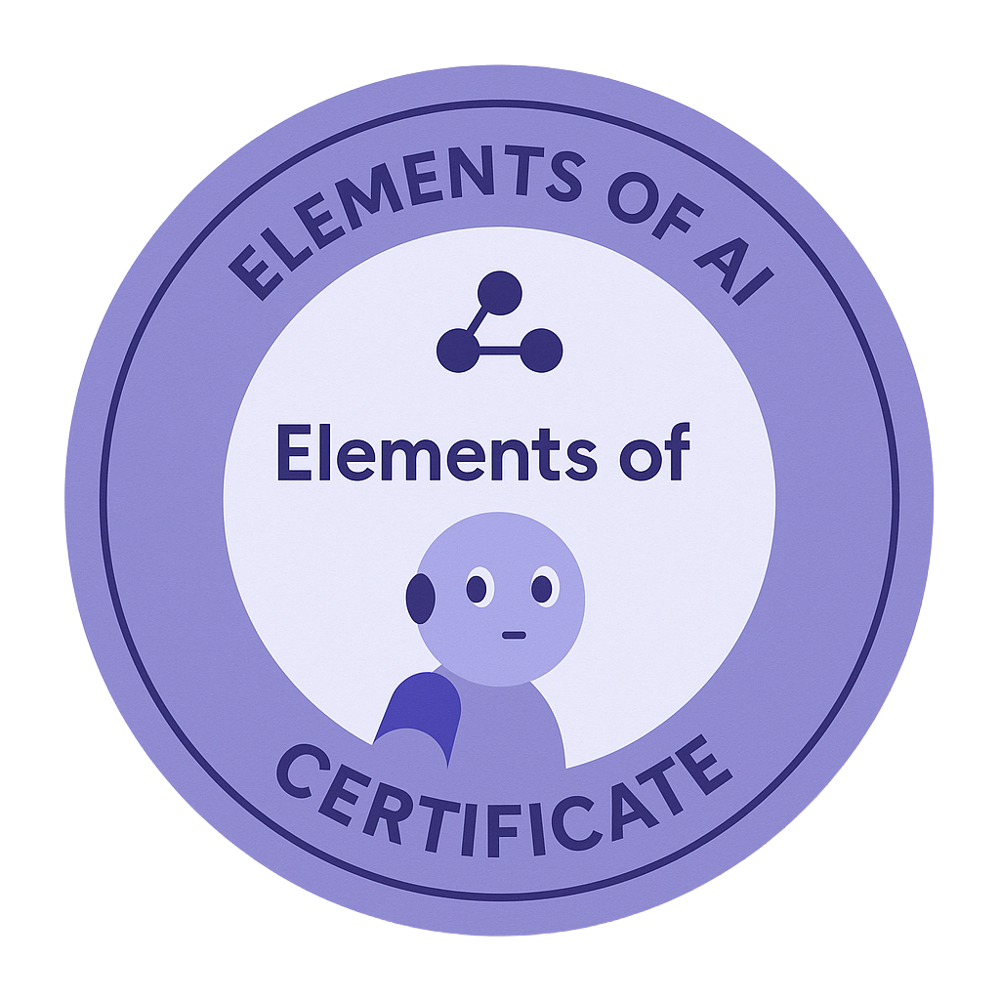
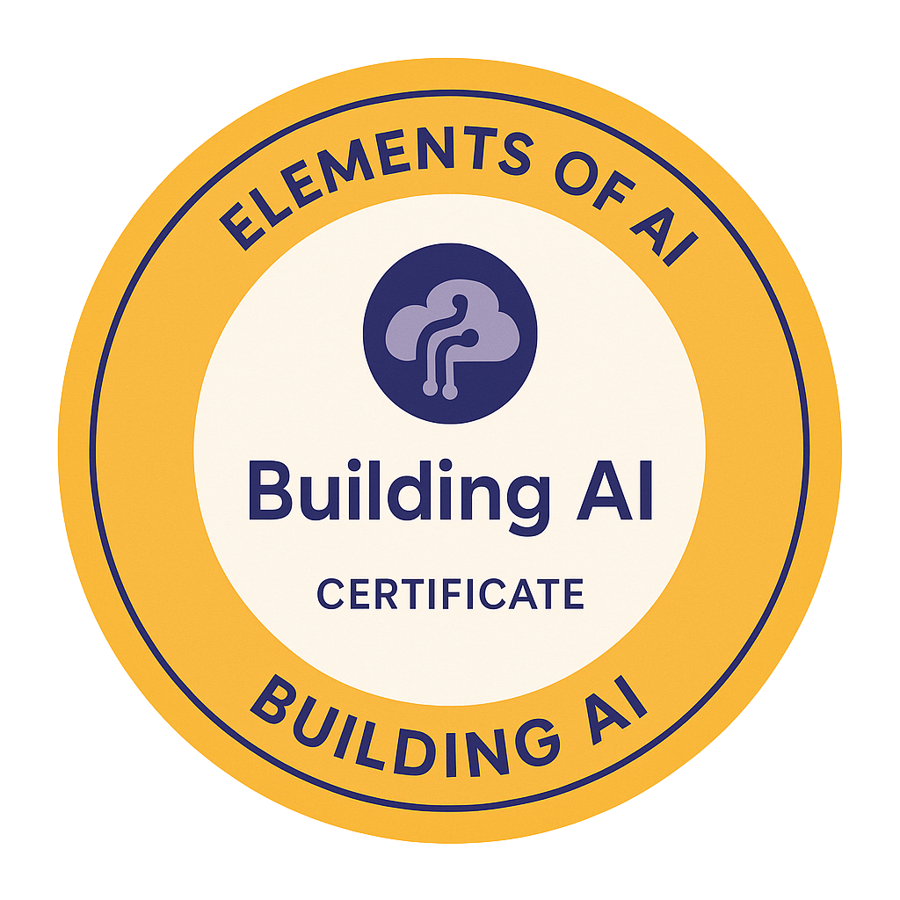
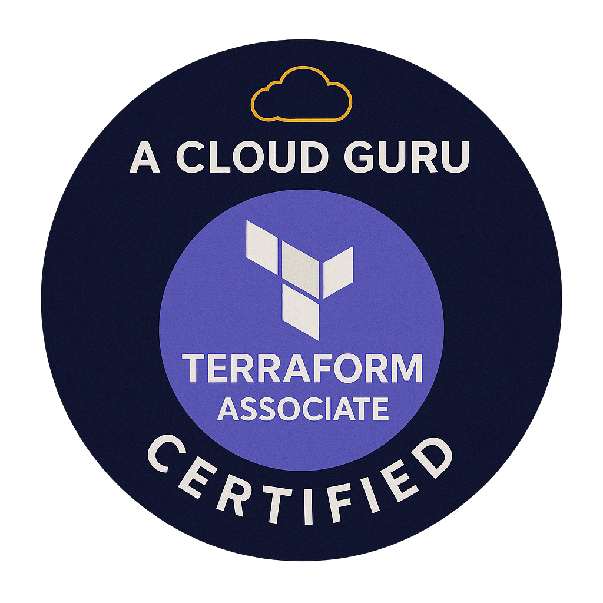
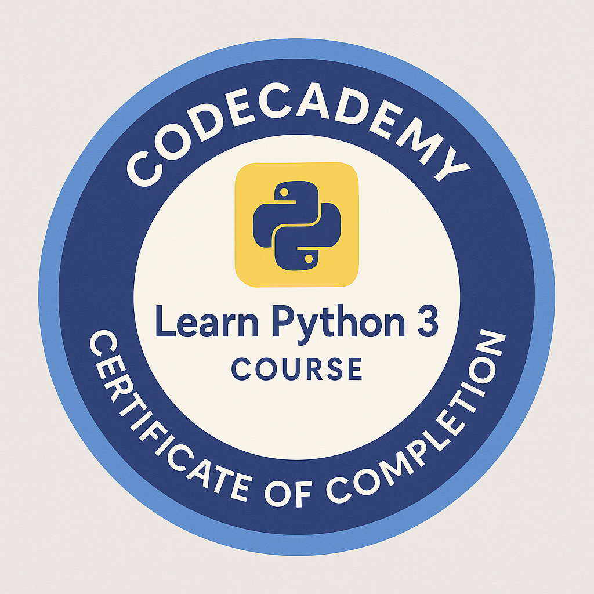
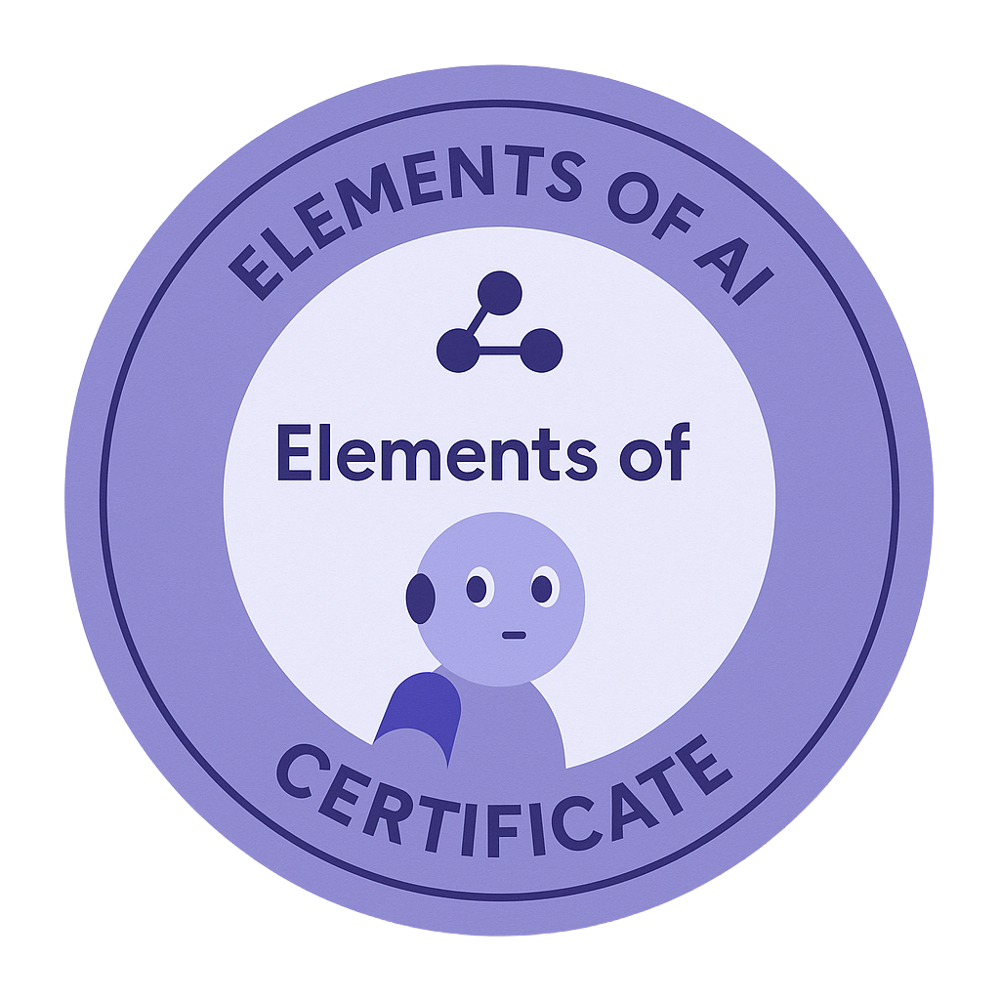
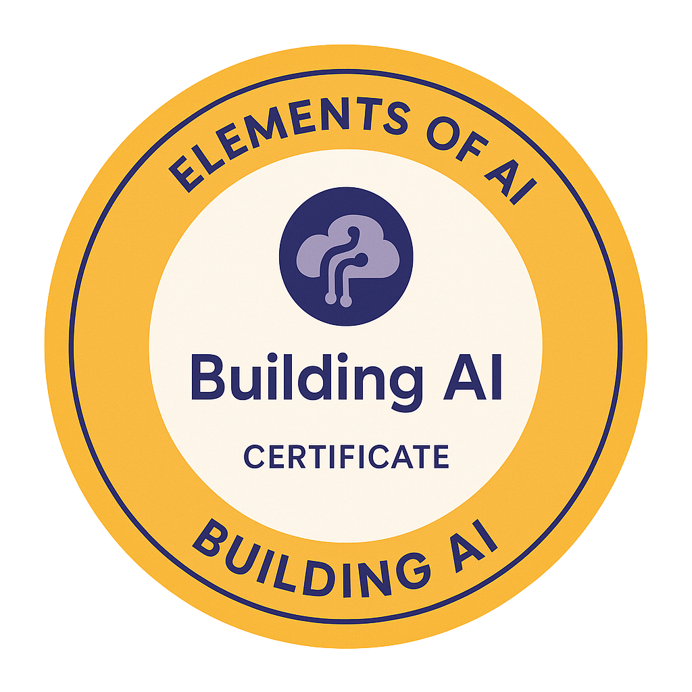
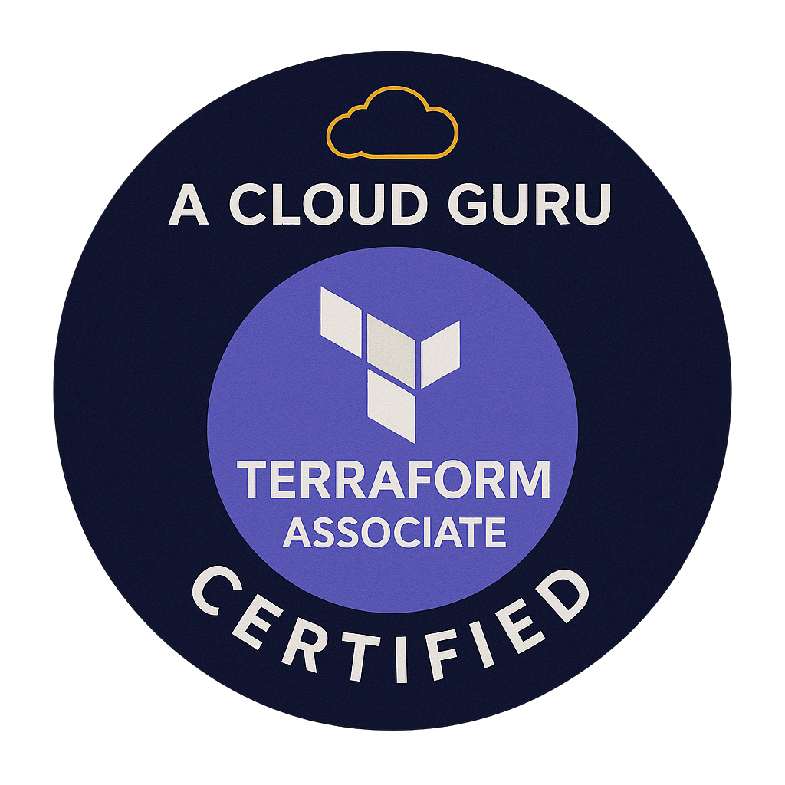

AWS Cloud Practitioner & NLP Specialist
Profile
Certified AWS Cloud Practitioner with deep expertise in Telephony and Natural Language Processing, specialising in large-scale contact centre solutions. Proven track record in optimising operations, reducing costs, and enhancing system performance. Skilled in driving technology adoption through Agile and SAFe methodologies, with a strong focus on innovation, compliance, and business integration
Certifications
- AWS Cloud Practitioner Foundation
- AWS Cloud Quest – Cloud Practitioner
- Learn Python 3 (Codecademy)
- Elements of AI (University of Helsinki)
- AWS Certified Solutions Architect – Associate
- GitHub Foundations, Terraform Associate
Projects
Diabetes Tracker Web App
Summary: A personal health management web application designed to help individuals monitor and manage their diabetes. Built using Python and Streamlit, the app enables users to track blood glucose readings, HbA1c lab results, and diabetic supply inventory in a simple, secure, and intuitive interface.
- Manual and CSV import of blood glucose readings
- HbA1c trend logging and visualization
- Inventory tracking for diabetic supplies (e.g. insulin, test strips)
- Visual graphs with rolling averages and combined trends
- CSV file downloads and template support
- Custom data reset, data separation, and first-time setup guidance
- Version-controlled and hosted via GitHub with a public Streamlit deployment
Tech Stack: Streamlit (frontend), Python (Pandas, Matplotlib), CSV (data), GitHub + Streamlit Cloud (deployment)
- Clean, modular architecture with utils.py for logic separation
- Release notes, changelogs, project board, GitHub wiki, and contribution guide
- Fully documented README and structured folder system
- Actively maintained with versioning and milestone tracking
Technical Skills
Amazon Web Services, Amazon Connect, Lex, AWS CloudWatch, Terraform, Python, ServiceNow, Cisco Tools, SQL, GitHub, PowerBI, Qstory
Project & Delivery Skills
Agile, SAFe, Jira, Zephyr Scale, Miro, Confluence, Telephony Consultancy, Testing, Documentation, Stakeholder Management
Experience
Senior Consultant – NLP Specialist
Nationwide Building Society | 2017 – Present
- Spearheaded the design, deployment, and continuous development of Natural Language Processing (NLP) solutions, becoming a recognized subject matter expert in both on-premise and cloud-based environments.
- Designed and implemented scalable processes to enhance NLP functionality and expand its scope, including the management and deployment of interaction models for Lex Bots—adding new utterances, slot values, and synonyms.
- Developed a robust change management framework for NLP models and monitored performance using AWS CloudWatch to identify and implement performance improvements.
- Led the design of telephony solutions tailored to complex business and regulatory requirements, including a cloud-based Business Continuity Plan (BCP) telephony system.
- Played a key role in the migration of a large-scale contact centre to a cloud-based provider, documenting customer journeys and designing standardized call flows using Agile SAFe methodology.
- Supported the development and rollout of a custom-built Admin Portal, enabling business users to manage Amazon Connect contact flows independently.
- Acted as a trusted advisor on Amazon Connect, providing training and support across departments and contributing to platform adoption.
- Implemented a comprehensive catalogue of ServiceNow tasks to streamline departmental workflows and ensure audit traceability.
- Recognized with multiple internal and industry award nominations (2017, 2019, 2020) for innovative solutions and impactful contributions.
- Championed the adoption of Jira, leading workflow optimization and enhancing project management efficiency.
- Introduced Zephyr Scale for standardized testing practices, improving visibility and consistency across the department.
- Transitioned reporting processes from Excel to Power BI, significantly improving data visualization and reporting capabilities.
- Served as Information Security Coordinator, managing access controls and conducting monthly audits for joiners and leavers.
Senior Telephony Consultant
Nationwide Building Society | 2011 – 2017
- Contributed to the development and maintenance of a large-scale, multi-site virtual contact centre infrastructure.
- Oversaw the automation and continuous improvement of telephony systems, ensuring seamless integration with business operations.
- Provided strategic consultancy on telephony projects, collaborating with stakeholders across diverse business areas.
- Developed compliant documentation and change management processes aligned with internal audit requirements.
- Supported senior analysts with platform-related tasks and enhancements.
- Acted as a ‘People Lead’ to foster a positive team culture, organizing recognition initiatives and departmental events.
- Managed relationships with external partners, including voice talent, recording studios, and offshore development teams.
IVR Analyst
Nationwide Building Society | 2009 – 2011
- Delivered BAU telephony changes with minimal disruption, ensuring operational continuity.
- Conducted end-to-end testing of customer journeys to validate system changes and enhance user experience.
- Created and maintained MI reporting packs using data from Cisco HDS, CUIC, and Soft-ex Optimiser.
Direct Support Analyst
Nationwide Building Society | 2008 – 2009
- Supported the full recruitment lifecycle, including conducting face-to-face and telephone interviews, coordinating with hiring managers, and ensuring a smooth candidate experience.
- Oversaw facility management tasks, such as logging maintenance issues, scheduling engineer visits, and coordinating regular inspections to ensure operational efficiency.
- Managed the relationship with a third-party facilities management company, acting as the primary point of contact to ensure service quality and timely issue resolution.
Education
- BA (Hons) Communication Studies
- A-Levels – ICT, Media Studies, Communication Studies
- 10 GCSEs A–C including Maths, English, and Science
Interests
Reading, Role Playing Games, Coding, Cooking